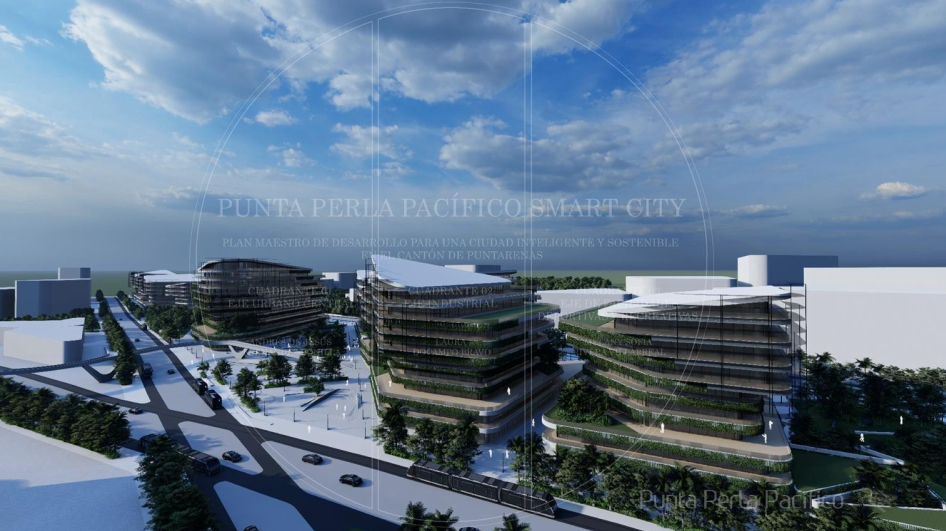
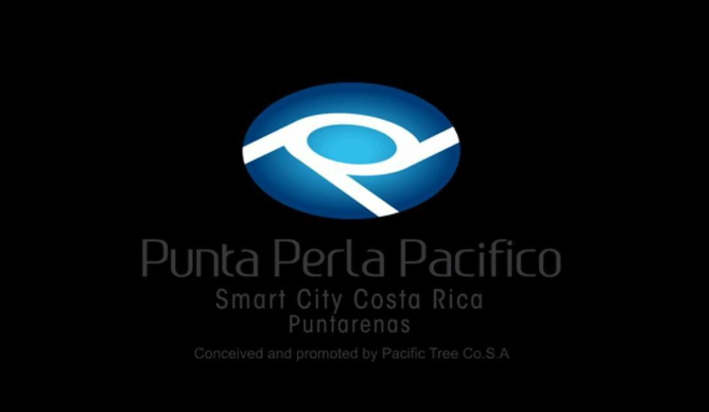
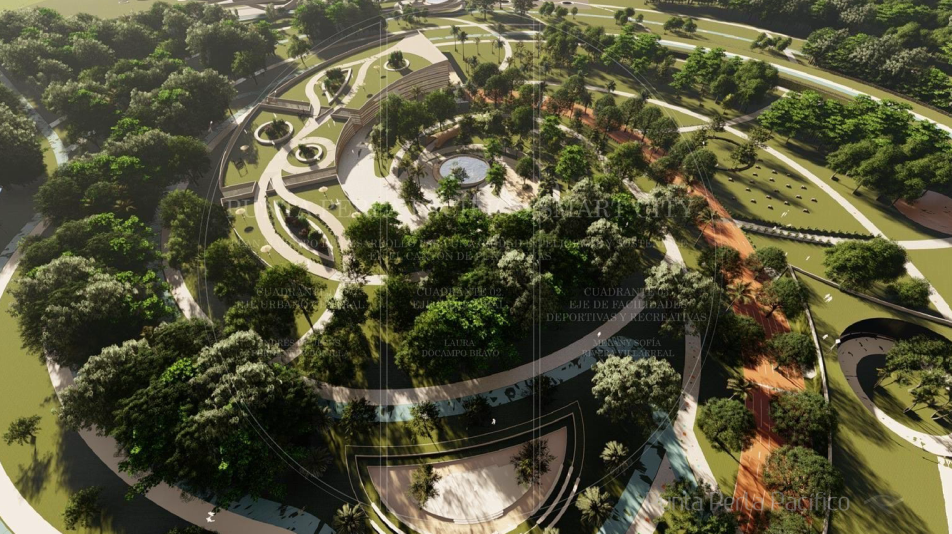
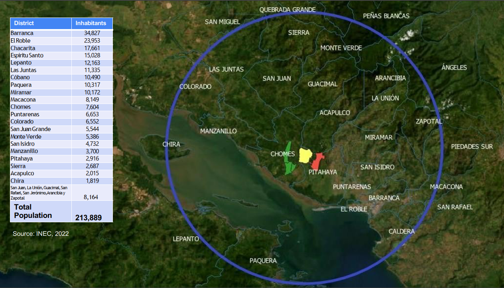

Punta Perla Pacífico
Desarrollo integral que articula una Smart City, dos Áreas Económicas, regeneración ambiental e infraestructura estratégica bajo un modelo de asociación público‑privada.

Punta Perla Pacífico
Desarrollo integral que articula una Smart City, dos Áreas Económicas, regeneración ambiental e infraestructura estratégica bajo un modelo de asociación público‑privada.
Punta Perla Pacífico nace como una plataforma de desarrollo territorial que integra tecnología, infraestructura, sostenibilidad y desarrollo humano para crear valor económico y social de largo alcance.

Es un modelo urbano que combina infraestructura física y digital para mejorar la calidad de vida de las personas, optimizar recursos y permitir una gestión eficiente, transparente y sostenible.
El proyecto se estructura en dos Áreas Económicas complementarias, cada una con anclas de desarrollo específicas.

Para información adicional y material del proyecto.
Mauricio Dobles M.